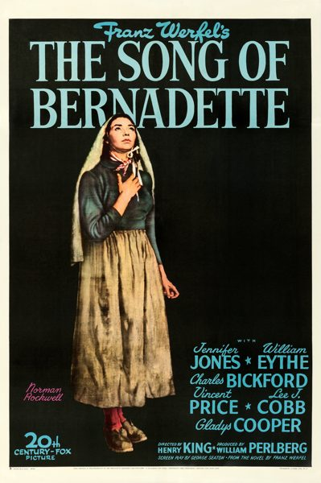

The Song of Bernadette
Starring: Jennifer Jones, William Eythe, Charles Bickford
Director: Henry King
Writer: George Seaton, Franz Werfel
Producer: William Perlberg
The Song of Bernadette is a 1943 American biographical drama film based on the 1941 novel of the same name by Franz Werfel. It stars Jennifer Jones in the title role, which portrays the story of Bernadette Soubirous, who reportedly experienced eighteen visions of the Blessed Virgin Mary from February to July 1858 and was canonized in 1933. The film was directed by Henry King, from a screenplay by George Seaton.
Trivia
- Won the Academy Award for Best Actress.
- Won the Academy Award for Best Cinematography, Black-and-White.
- Won the Academy Award for Best Art Direction, Black and White.
- Won the Academy Award for Best Original Dramatic or Comedy Score.
- Selected for the National Board of Review: Top Ten Films.
- Also nominated for: Academy Award for Best Picture; Academy Award for Best Supporting Actress; Academy Award for Best Supporting Actor; Academy Award for Best Director; and 3 more.
- Based on The Song of Bernadette (1942 novel by Franz Werfel).
Previous Showings
5 Runs • 1 Festival
Original Billings: 2 runs (April 9, 1944 - April 25, 1945)
Original Run: April 9, 1944 (Sunday - Wednesday)
All runs on record (5):
- April 9, 1944 (Sunday - Wednesday)Jennifer Jones
- April 25, 1945 (Wednesday - Friday)Jennifer Jones
- September 15 - 18, 1990w/ Cluny Brown
- May 10 - 11, 1995w/ The Prisoner of Zenda (1937)
- January 11 - 12, 2010Remembering Jennifer Jonesw/ Madame Bovary